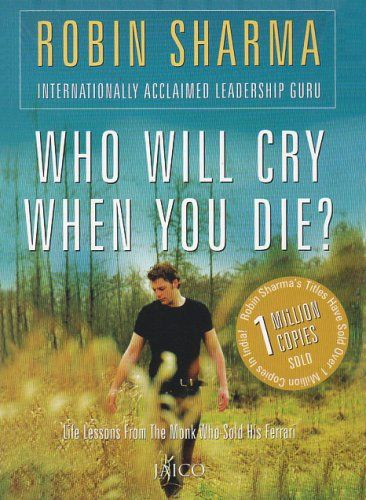
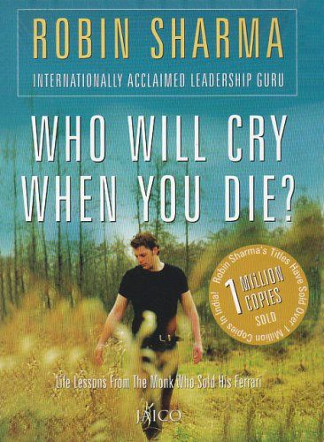

Впервые оно прозвучало в 1889 году. Однако «тиражируемые» книги появлялись в истории человечества и раньше. Как только было изобретено книгопечатание, книготорговцы заметили, что некоторые издания расходятся мгновенно, а некоторые ждут покупателя годами. Так как спрос на книги сильно зависел от их стоимости, был придуман популярный коммерческий ход – издавать серьёзные произведения в виде тоненьких лёгких книжиц. Первые книги имели религиозный характер. Небольшой по объёму катехизис продавался лучше, чем многостраничная Библия. Несмотря на то, что сегодня она является самой распространённой книгой в мире, в былые времена переиздавалось такое дорогое издание нечасто. А вот факторы, от которых зависит продаваемость, могут быть разными. Перечислим наиболее важные. Адресация так называемому «среднему читателю». История, которую рассказывает автор, должна легко прочитываться с первого раза и затрагивать базовые стороны человеческой жизни.Остросюжетность. Сюжет – это самое простое и самое сложное, чем можно привлечь читателя. В произведении должна присутствовать интрига, сформулировать суть которой можно одним предложением. Например, о детективе А. Кристи «Убийство в Восточном экспрессе» можно сказать так: «В вагоне поезда, куда не проникал ни один посторонний, находят тело убитого: кто из пассажиров причастен к преступлению?». Обращение к злободневным, социально значимым проблемам. Так, новая книга З. Прилепина «Некоторые не попадают в ад», посвящённая событиям на Донбассе, воспринимается частью российского общества как правда из первых уст и успешно продаётся. А вот факторы, от которых зависит продаваемость, могут быть разными. Перечислим наиболее важные. Первый и основной критерий бестселлера – хорошая продаваемость. При этом в разных странах числовые показатели варьируются (в Великобритании – 4 тысячи продаж в неделю, в Канаде – 5 тысяч продаж в неделю).
 
